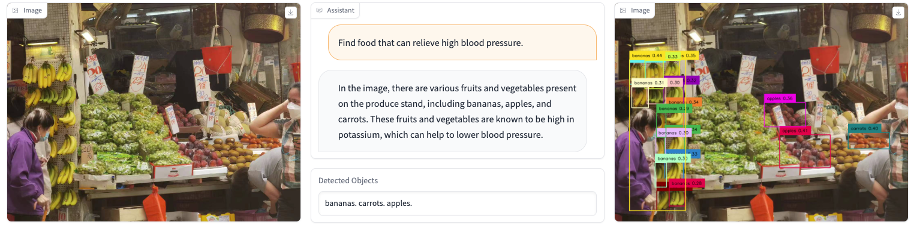
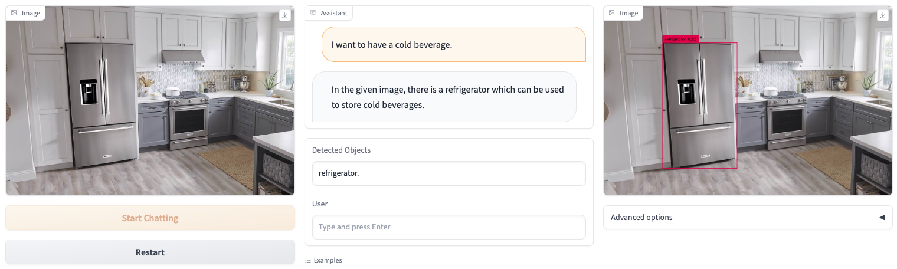
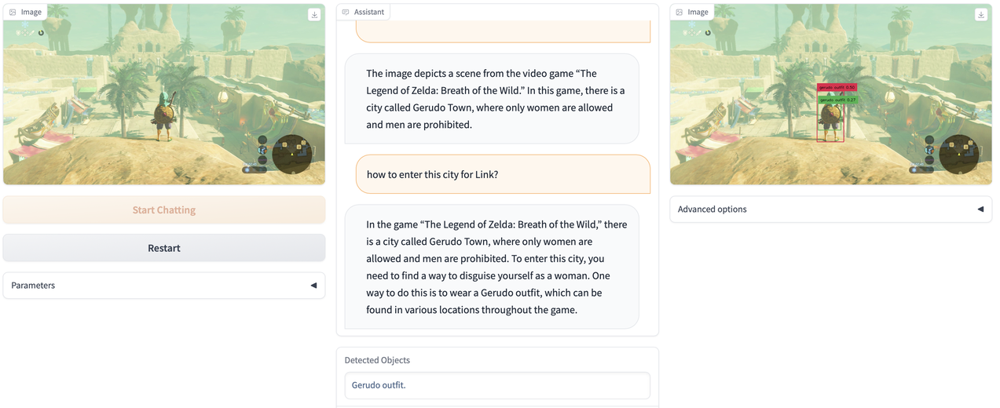
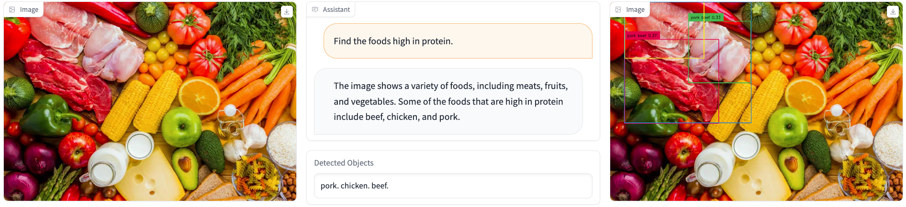
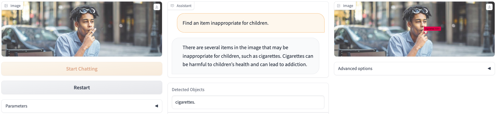
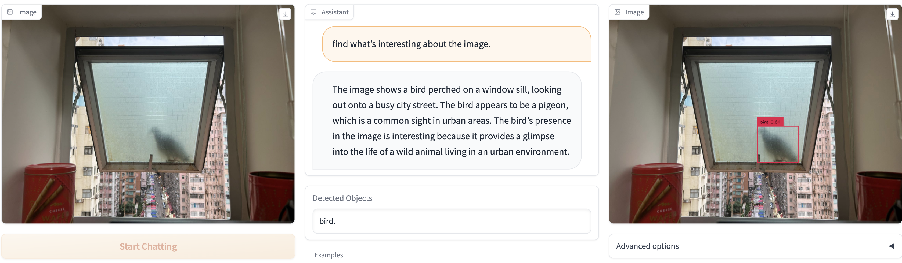

We present a novel object detector that is able to perform reasoning under complex user instructions. Different from previous object detection methods, which requires the user to provide specific names of objects, our object detector takes things to the next level by allowing users to interact with it using natural language instructions. Our detector is not only able to find the target object but also provide accurate and detailed information about its location and other important features. The most exciting features about our object detector is its ability to perform reasoning under the context of the user's instructions and the visual scene. For instance, if the user tells it that he/she is thirsty and would like a cold beer, it can analyze the image and find a fridge, and then use its knowledge of typical fridge contents to locate the beer, even though the fridge is does not appear in the user instruction. Owing to this flexibility, the detector is able to interpret user instruction and automatically locate the object of interest, which makes it suitable for a wide range of applications, from robotics and automation to security and surveillance.
To address the challenge of reasoning-based object detection, we employ the visual encoder of BLIP-2 to comprehend the image and extract image features. We then develop a cross-modal alignment function to map the image features to the text domain, and utilize Vicuna/Robin as the knowledge brain to interpret both the image features and human instructions, perform reasoning, and determine the target objects in the image that can help accomplish the given task. Finally, we use an off-the-shelf detector, Grounding-DINO, to localize the target objects in the image. Following the approach of MiniGPT-4, we employ a linear projection layer for the cross-modal alignment, which has been proven effective in bridging the gap between vision and language modalities.
The overall architecture of DetGPT.
@misc{detgpt2023,
title = {DetGPT: Detect What You Need via Reasoning},
url = {to be updated},
author = {Pi, Renjie and Gao, Jiahui and Diao, Shizhe and Pan, Rui and Dong, Hanze and Zhang, Jipeng and Yao, Lewei and Han, Jianhua and Xu, Hang and Kong, Lingpeng Kong and Zhang, Tong},
month = {May},
year = {2023}
}This website is adapted from Nerfies, licensed under a Creative Commons Attribution-ShareAlike 4.0 International License.
We thank the LLaMA team for granting us access to their models and open-source projects, such as Vicuna and MiniGPT-4.